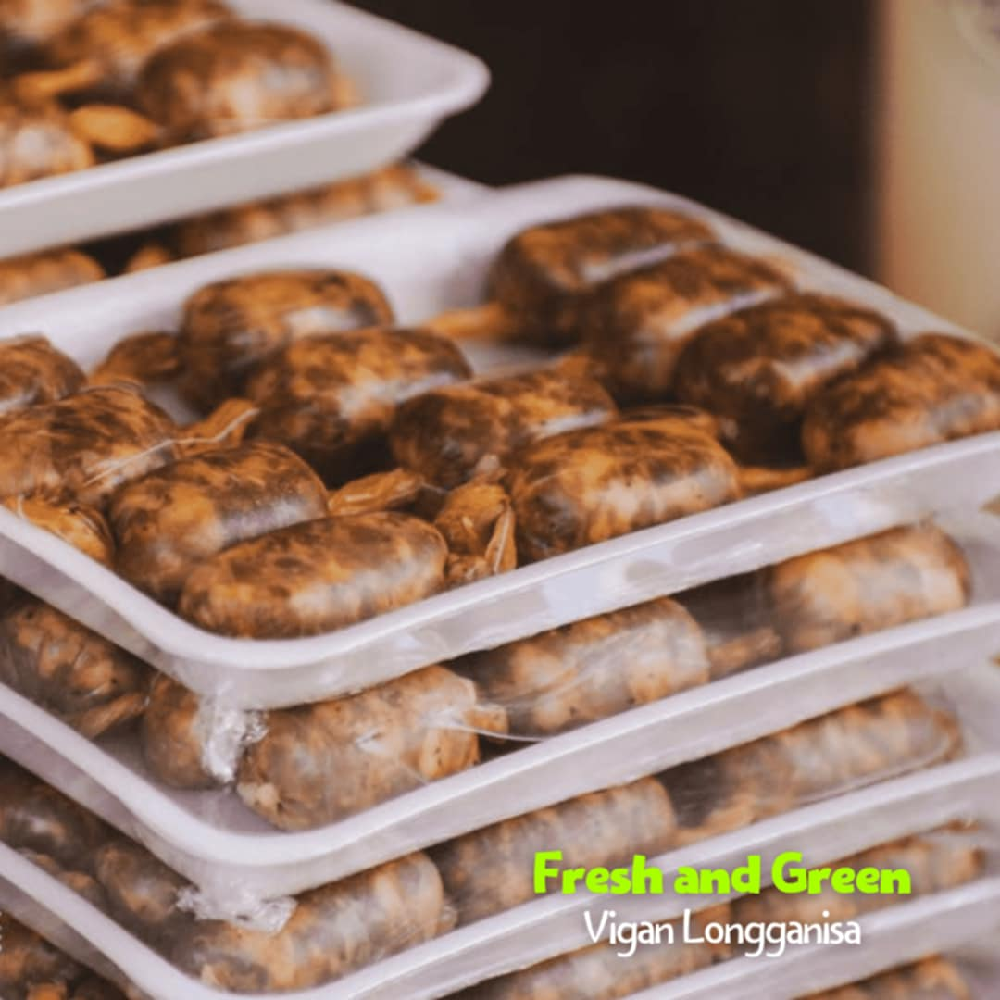
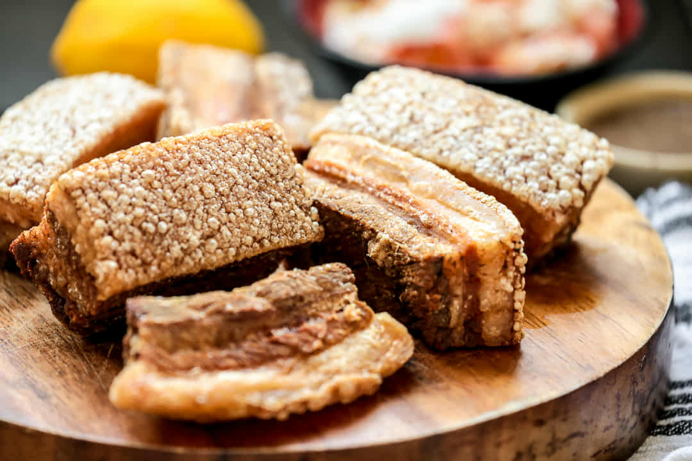
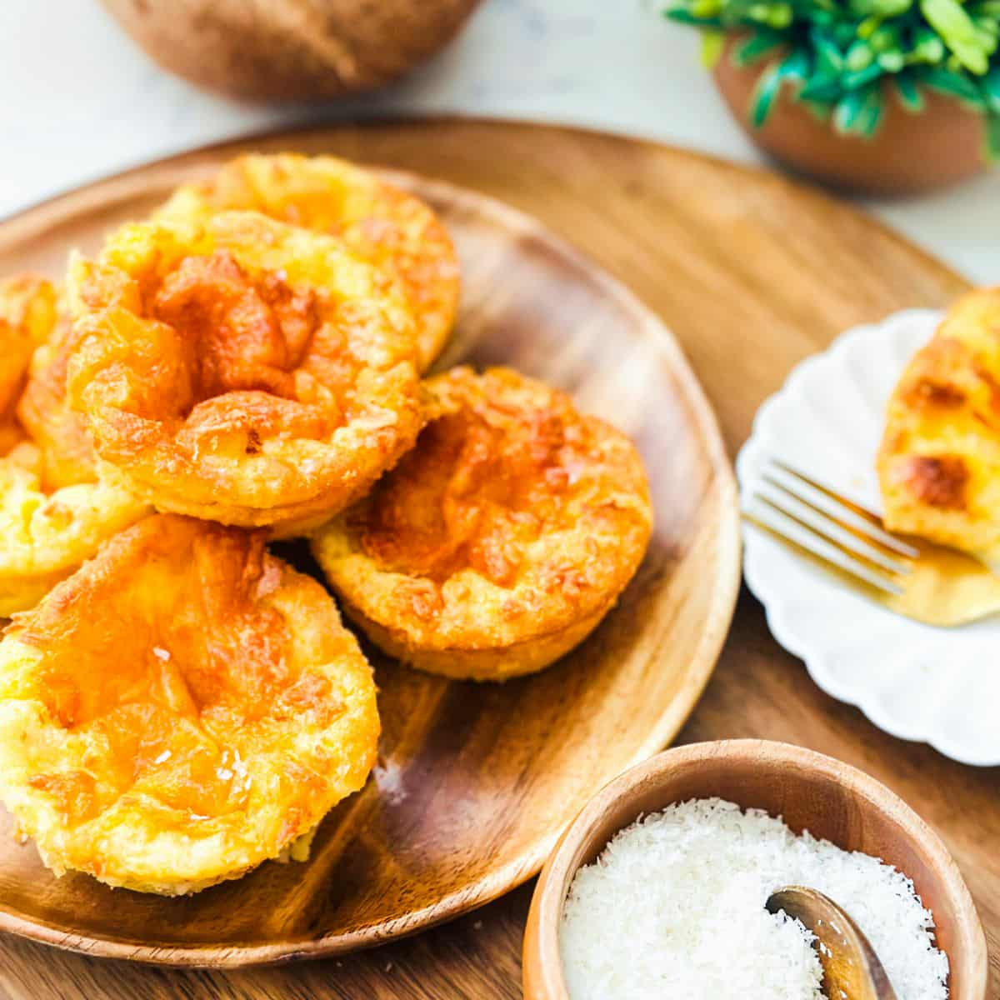
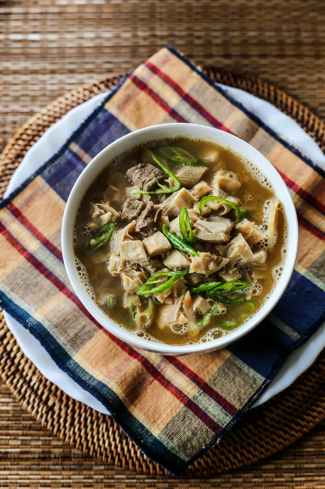
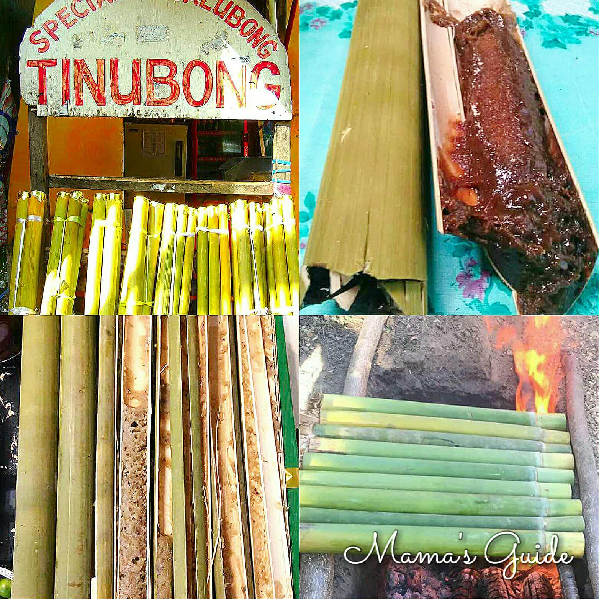
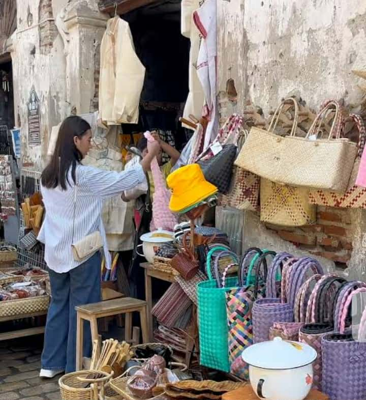
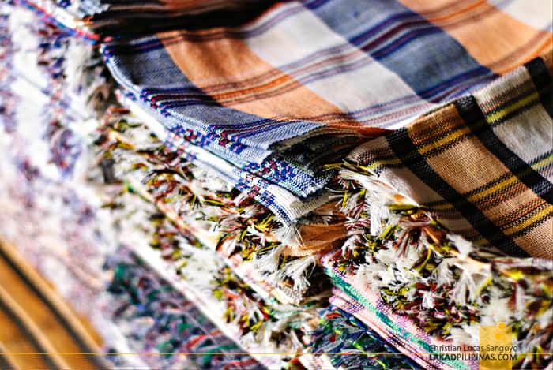
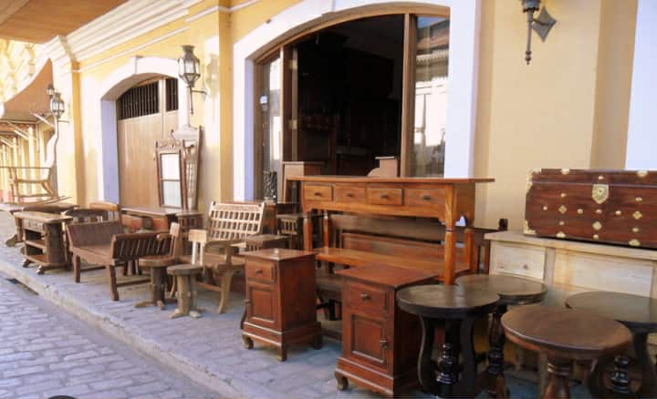
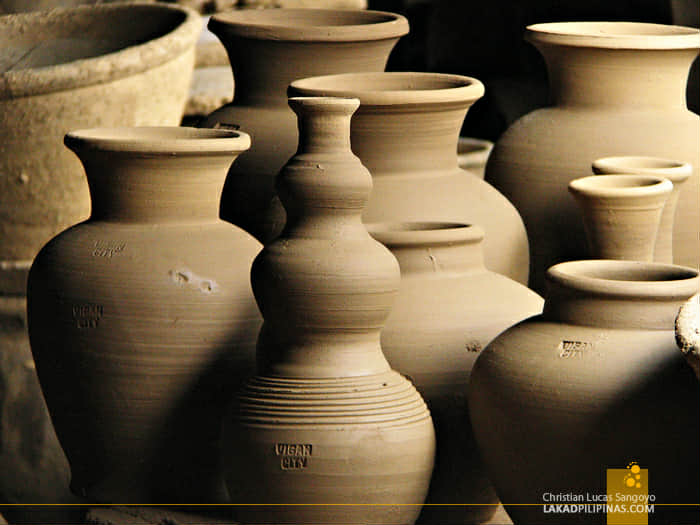
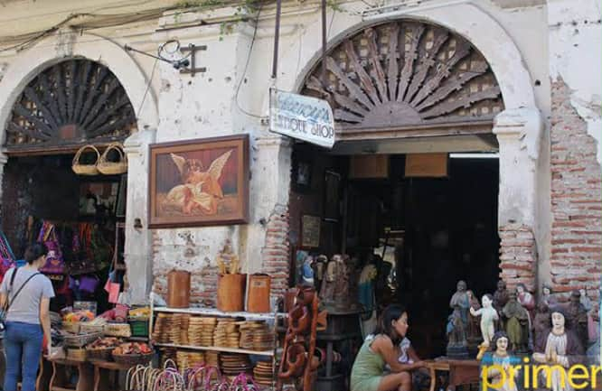

Local Foods and Products

Vigan LongGanisa
Delicious Taste native sausage.
Price:₱150

Bagnet
Crispy Pork belly specialty.
Price:₱300

Vigan Empanada
A crispy and deep-fried pastry food of vigan.
Price:₱80

Royal Bibingka
A sweet and native rice cake.
Price:₱150

Sinanglao
A soup made from beef innards flavored with bile and vinegar.
Price:₱100

Tinubong
Sweet delicacy that cooked inside a bamboo tube.
Price:₱200

Vigan Handicraft
Made by handicrafts like bags, baskets wallet and etc.
Price:₱350

Abel Ilocano
Handwoven textiles that made in cotton.
Price:₱200 per

Vigan Key Chains
Key chains and ref collectors that you will have in vigan.
Price:₱100

Wood Carvings Furniture
Woodwork that made by local artisians.
Price:₱500

Burnay Jars
Traditional jars made from clay.
Price:₱250

Antique Items & Replicas
Shops that along Calle Crisologo antique furniture.
Price:₱150